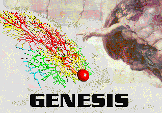

The "Ultimate GENESIS Tutorial Distribution" serves as both a distribution of GENESIS 2.4 and a self-paced course on biologically realistic modeling in general, and creating simulations with GENESIS in particular. It brings together material that is available as separate downloads from the GENESIS web site and through the GENESIS Users Group. It includes several simulator-independent tutorials on biologically realistic neural modeling, as well as both tutorial and research simulations that have been implemented with GENESIS. The extended Tutorials package includes course material used at several international courses on neural modeling and a "Getting Started With Realistic Neural Modeling" guide, with suggested exercises for self-paced study. The files here are organized in a manner suitable for burning the "UGTD" to a CDROM or memory stick for course use. Here is an image suitable for a CDROM label.
The latest version of this package will be available at http://genesis-sim.org/GENESIS/UGTD.html.
This update of the June 2009 version contains additional network simulations, new Python tools, and exercises to go with the tutorials that were used for the January 2014 Latin American School on Computational Neuroscience (LASCON).
For the best entry point for this new material, see:
Getting Started With Realistic Neural Modeling - This is a guide to using this extended version of the Tutorials package, with suggested exercises. It also has some suggestions for using the material in this package for self-paced study.
The file Tutorials/exercises/course-tutorials.html contains suggestions (and links) for exercises and modeling projects to accompany the tutorials.
The GENESIS Neural Modeling Tutorials are an evolving package of HTML tutorials intended to teach the process of constructing biologically realistic neural models. The version included here is an extended one with additional models from the GENESIS web site and GENESIS Users Group.
The GENESIS Modeling Tutorial . This is the main tutorial for modeling with GENESIS. It is intended to be a "quick start" to creating simulations with GENESIS. It should give you the tools and enough information to let you quickly begin creating cells and networks with GENESIS, making use of the provided example simulations.
PDF version of "The Book of GENESIS" This is frequently referenced in the GENESIS Modeling Tutorial.
An Introduction to Computational Neuroscience - These are introductory lectures on computational neuroscience and realistic neural modeling. It has sections on the Hodgkin-Huxley model and compartmental modeling that might be useful to those who are studying them for the first time, or who need some review.
Plain Text GENESIS Reference Manual (Has latest GENESIS 2.4 beta additions.)
Introduction to UNIX or Linux and the graphical desktop - Some basic information for new users of UNIX or Linux.
Some suggestions for installing Linux on a PC - If you would like to install GENESIS, but don't yet have Linux installed, this gives some hints on how to do it.
The genesis/Scripts directory in any of the unpacked GENESIS distribution archive files contains many example simulation scripts, including those used in the Book of GENESIS. Some of these illustrate GENESIS features and techniques for programming simulations. Others are interactive tutorials for teaching concepts in neurobiology and neural modeling. As their use requires no knoweldge of GENESIS programming, they are suitable for use in a computer simulation laboratory which would accompany upper division undergraduate and graduate neuroscience courses. Each of these has on-line help and a number of suggested exercises or "experiments" which may be either assigned as homework or used for self-study. These tutorials may also be taken apart and modified to create your own simulations, as they are reasonably well commented. Several of them are derived from existing research simulations.
The GENESIS simulator is licensed under the terms of the GNU General Public License, and the tutorials are licensed under the terms of the GNU General Documentation License or other compatible licenses. You are encouraged to copy and distribute the contents of this CDROM, as long as you abide by the terms of these licenses. Copyright and License Information is provided with the GENESIS distribution, and within the Tutorials directory.
Visit the GENESIS web page at http://www.genesis-sim.org/ for more information about GENESIS, user forums, and access to the latest versions of GENESIS and the tutorials on neural modeling.
The Sourceforge GENESIS development site at http://sourceforge.net/projects/genesis-sim contains links for the GENESIS Users Group (genesis-sim-users) mailing list and the CVS Repository for GENESIS 2 versions.
Last updated on: Thu Jul 17 11:51:26 MDT 2014
{kind=link}